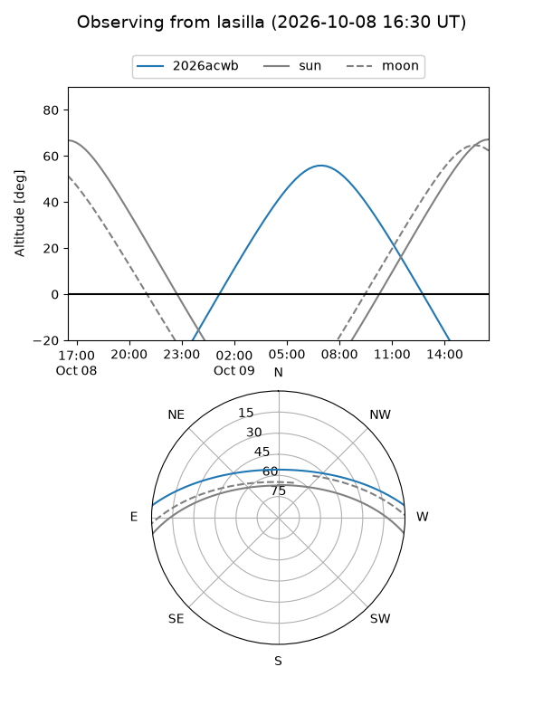
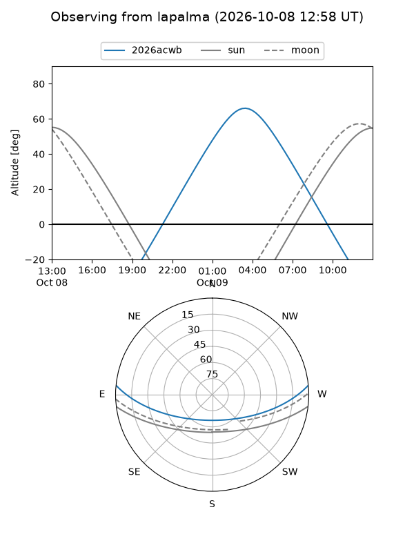
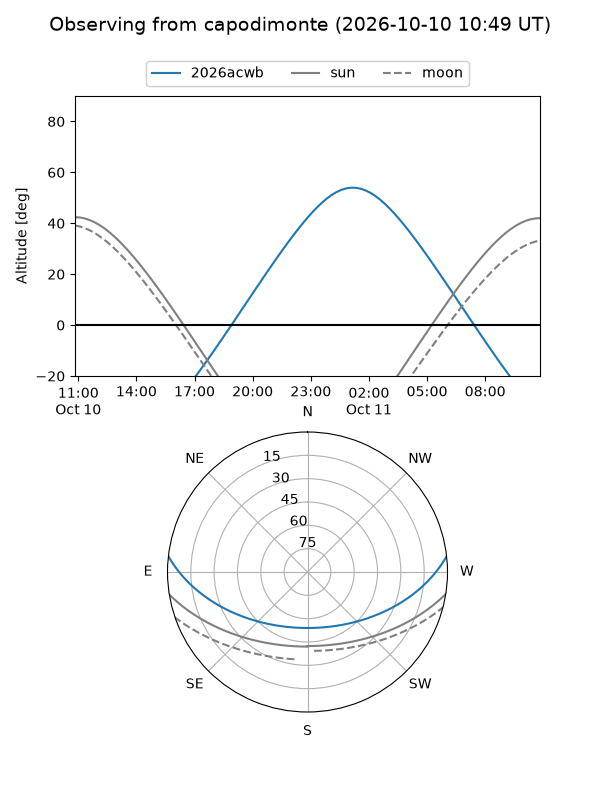
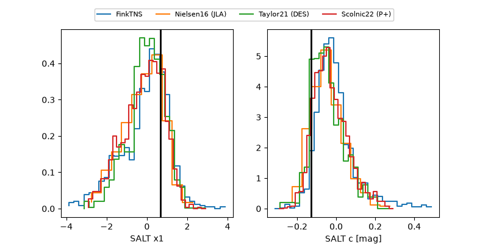

2026acwb
Target 2026acwb at 2026-10-09 13:16
Aliases and brokers:
FINK-ZTF: ztf.fink-portal.org/ZTF26abwxttz
Lasair-ZTF: lasair-ztf.lsst.ac.uk/objects/ZTF26abwxttz
ALeRCE-ZTF: alerce.online/object/ZTF26abwxttz
YSE-PZ: ziggy.ucolick.org/yse/transient_detail/2026acwb
TNS name: wis-tns.org/object/2026acwb
Direct TNS query: direct search
alt names
ZTF26abwxttz (ztf,fink_ztf)
2026acwb (tns,yse)
PS26jjy (panstarrs)
Coordinates:
equatorial (ra, dec) = 51.0368,+4.76354
equatorial (HMS+DMS) = 03:24:08.83,+04:45:48.73
galactic (l, b) = (177.9433,-41.24940)
Flags:
peak dt: +7.5
Photometry:
last ztfg=20.10, ztfr=20.15
5 ztfg, 3 ztfr detections
Lightcurve
Visibility



Additional plots
